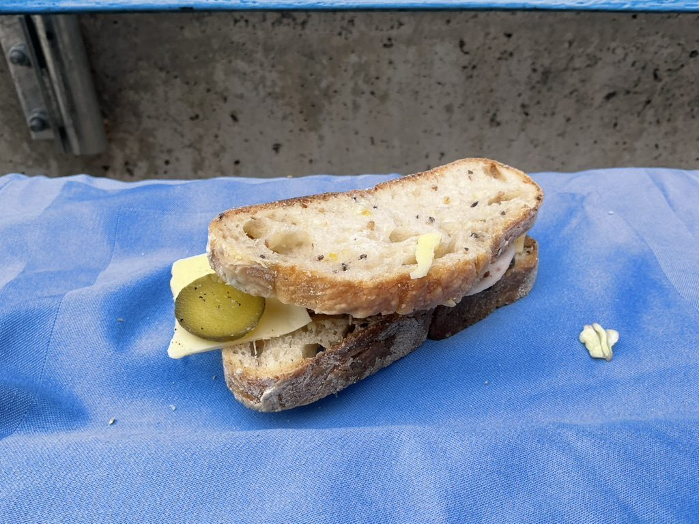

ABOUT
店のこと


このページについて
確認できているのは、所在地とInstagramだけ
「街の灯台 喫茶ファロ」について、このサンプルで確認できているのは所在地とInstagramのアカウントのみです。お店の考えや提供内容は、ご本人から伺ってから書き込む前提で、いまは「準備中」としています。
| 屋号 | 街の灯台 喫茶ファロ |
|---|---|
| 所在地 | 〒069-0813 北海道江別市野幌町36-12 |
| 電話 | 準備中 |
| SNS | Instagram @kissafaro |
デザインの考え方
ミルクピッチャーの六つの部位
小さな注ぎ物の器は、部位ごとに役割がはっきりしています。この試作サイトでは、それを図に見立てて六つに分けました。制作側の連想で、お店の理念・由来とは無関係です。
1
注ぎ口
中身を細く注ぐための、胴の縁から前に張り出した三角の部分。
2
縁(リム)
開口部をぐるりと囲む、補強もかねた丸い縁取り。
3
胴(ボディ)
中身をためておく、ふくらみのある本体の部分。
4
持ち手(ハンドル)
指をかけて持ち上げるための、弧を描く取っ手。
5
持ち手の付け根
取っ手を胴に留めている、上下二か所の接合部。
6
底(ベース)
テーブルに置いたときに全体を支える、平らな面。


差し替えについて
この先に入れたいこと
お店のご紹介文、写真、メニューなどは、ご提供いただいたものに差し替えます。ここに載せている写真は、すべてフリー素材のイメージです。


サンドイッチの写真はイメージです。お店で提供しているものを示すものではありません。